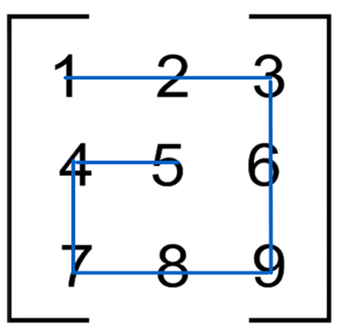
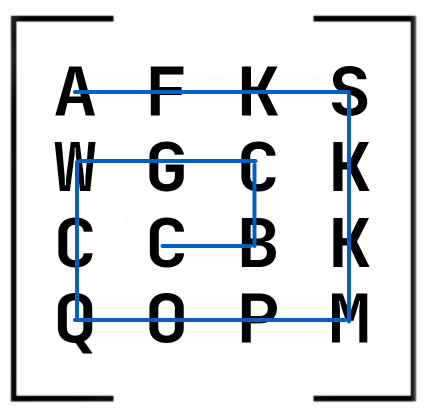

Матрицу можно представить в виде двумерного списка. Например, список [[1, 2, 3], [4, 5, 6], [7, 8, 9]] — это отображение матрицы: Реализуйте и экспортируйте по умолчанию функцию, которая принимает на вход матрицу и возвращает список элементов матрицы по порядку следования от левого верхнего элемента по часовой стрелке к внутреннему. Движение по матрице напоминает улитку:  